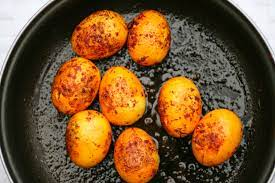

Ingredients

- 3 large white eggs
- 1 whole tomato
- 1/2 yellow onion
- 1/4 tablespoon chicken bouillon
- 2 red chilies
Egg Curry Ingredients
- Boil some eggs while we prep the rest of the ingredients
- Once the eggs are boiling, chop tomatoes and onions
- Blend the tomatoes, chilies, and onions all together
- After blending, put it into a hot pan and cook the tomatoes down, and season with chicken bouillon
- Cut boiled eggs in half and gently place them in the pan
- Once eggs are perfectly coated in the tomato curry, serve with rice